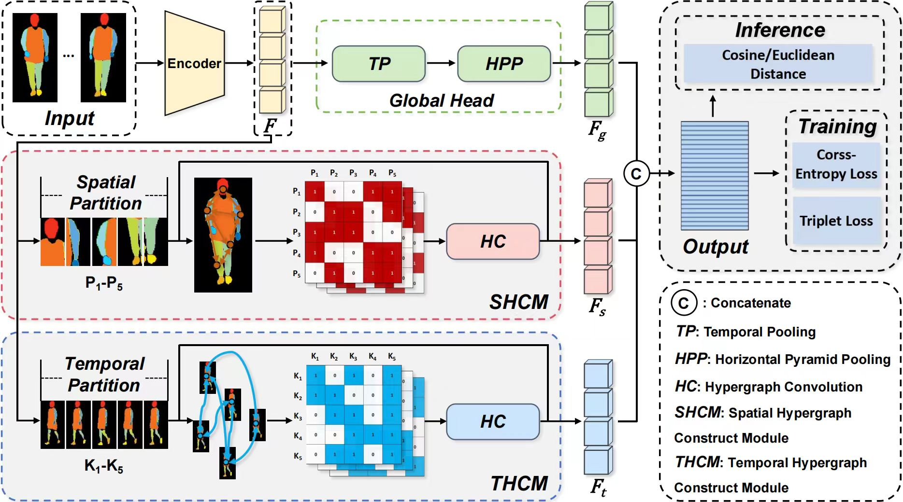
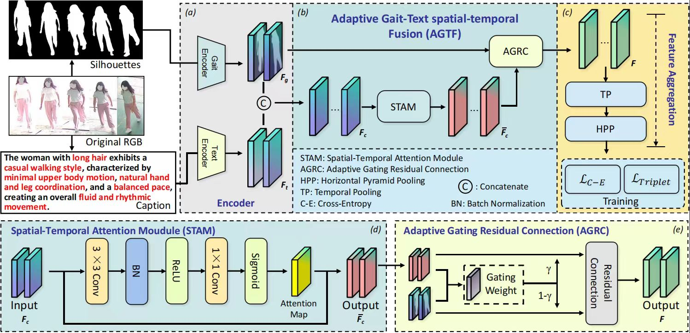
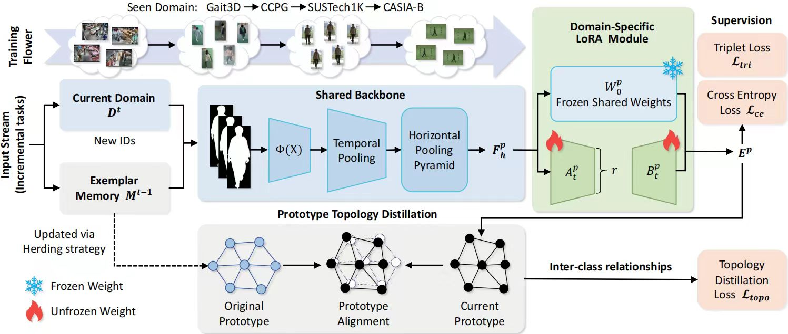
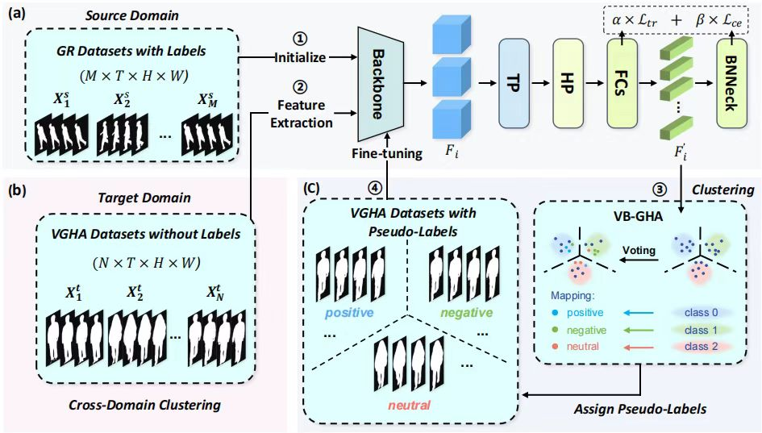
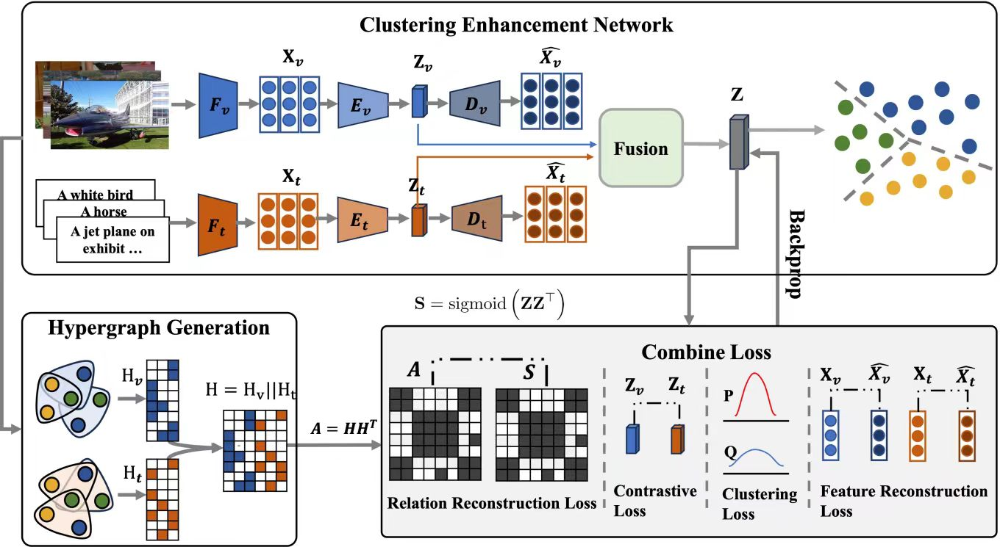

ID CARD
J1NXX / CV-002
金新翔
- Birthday
- 2002.10.02
- Region
- 浙江
- Major
- 通信工程
- Research
- 计算机视觉
我出生于 2002 年 10 月，在浙江温州长大。
我始终告诉自己要做一个情绪稳定的人，要勇敢起来。
我喜欢和别人探讨有深度的问题，我认为这是思想的交汇。
我是一个外表平静，内心却疯狂思考的人。
对外允许一切发生，轻微社恐，相信时间的力量。
对内精力异常旺盛，有着无限的 IDEA，相信意识的魔法。
人生可以不往高处走，也可以往四处走。
目标是穿过眼前的沼泽，不对付每一条鳄鱼。
一些稀奇古怪的 IDEA，和一些有趣的作品......

基于超图的步态识别研究，发表于 CVPR 2026 (CCF-A, Highlight)

基于自然语言的多模态步态识别研究，原创大规模显性步态-文本数据集

面向真实世界的 Lifelong Gait Recognition，朝着更鲁棒的方向靠近

围绕跨域知识迁移与步态识别的研究，拓宽步态识别的应用场景

基于超图的自监督图文聚类，很有趣的一个研究
这里会慢慢长出我的小工具、实验台和一些能把脑内噪声变成按钮的东西。
暂时保持留白。未来这里会出现 Prompt 实验室、视觉模型小工具、Token 账本，以及更多被 Codex 拖进现实的奇妙按钮。